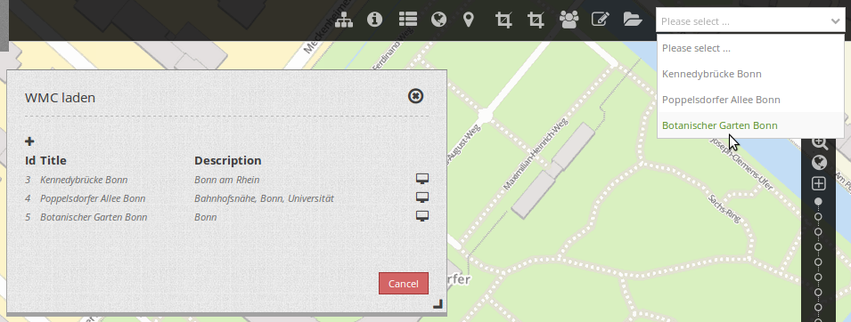
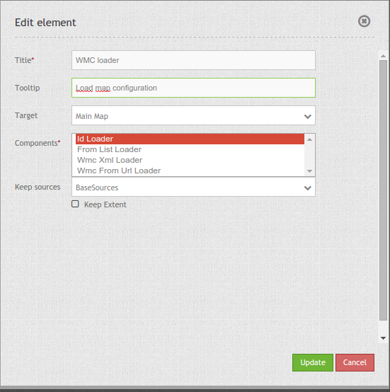

WMC Loader¶
Mapbender can save configurations (see WMC Editor). This configurations can be loaded with the element WMC loader.
You can add WMC Loader to your application as a selectbox or a button which opens a dialog.
When you choose a configuration, the services in the configuration will be merged in your existing application.
{kind=link}
Configuration¶
{kind=link}
- Title: Title of the element. The title will be listed in “Layouts” and allows to distinguish between different buttons. It will be indicated if “Show label” is activated.
- Tooltip: text to use as tooltip.
- Target: Id of Map element to query.
- Components: select components from:
- Id Loader: load configuration by id on start of application like ?wmcid=<wmcid>,
- From List Loader: load configuration from a list,
- Wmc Xml Loader: load the configuration from a file
- Wmc From Url Loader: loads the WMC from a URL, for example: ?wmcurl=<wmcurl>
- Keepsources: defines what should happen with the services of the application
- no: No Sources are kept. All sources are overridden by the WMC.
- BaseSources: Keeps the BaseSources and overrides the other ones. For example in connection with a BaseSourceSwitcher.
- AllSources: Keeps all sources and adds the sources from the WMC.
- Keep Extent: keeps the actual extent, default is false (will apply the extent of the configuration).
YAML-Definition:¶
title: WMC Loader
tooltip: 'Load configuration' # text to use as tooltip
target: map # name of map element
components: ['idloader', 'listloader', 'wmcloader'] # select components from
# idloader - load configuration by id on start of application like ?wmcid=<wmcid>
# listloader - load configuration from a list
# wmcloader - load from a file
keepSources: false # defines what should happen with the services of the application
# default false
# BaseSources - keep only the sources marked as BaseSource in the application
# AllSources - keep the sources that are already loaded in the application
keepExtent: false # keeps the actual extent, default is false (will apply the
# extent of the configuration)
You can configure this module as a selectbox or dialog. When you use dialog then you need a button to show this element. See Button for inherited configuration options.
Class, Widget & Style¶
- Class: Mapbender\WmcBundle\Element\WmcLoader
- Widget: <Put Widget name here>
- Style: <Put name of css file here>